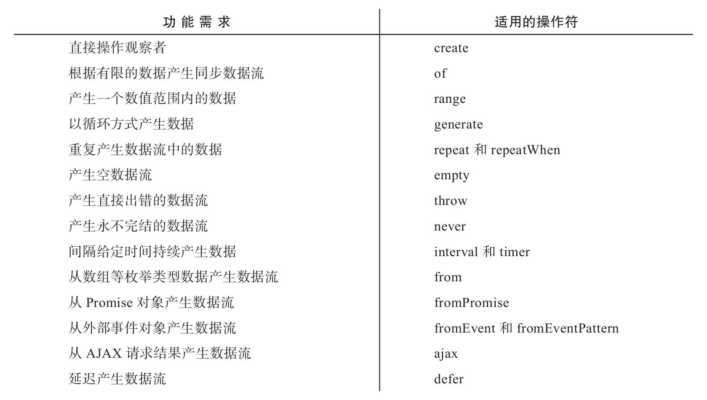

除了上帝，一切皆有起源。——谚语
在RxJS的世界中，一切都以数据流为中心，在代码中，数据流以Observable类的实例对象形式存在，创建Observable对象就是数据流处理的开始。
在本章中，我们会介绍RxJS中用于创造Observable对象的操作符，这些操作符是RxJS中数据流的源头，下面列出了对应不同功能需求所适用的操作符：

一个好的开始等于成功的一半，让我们在数据流的创建过程中开一个好头吧。